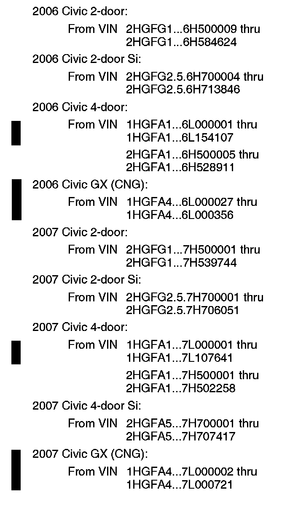
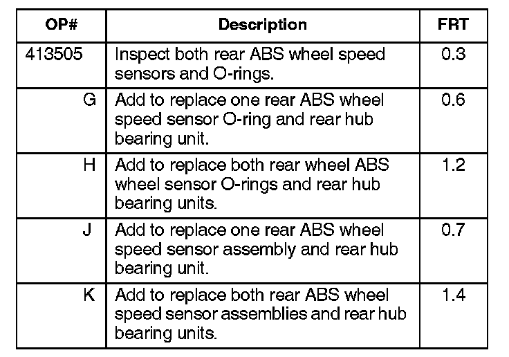
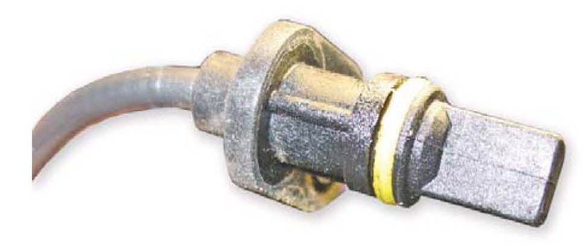
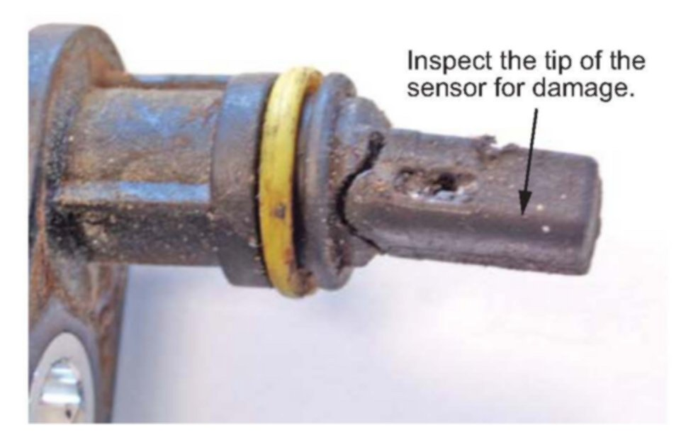
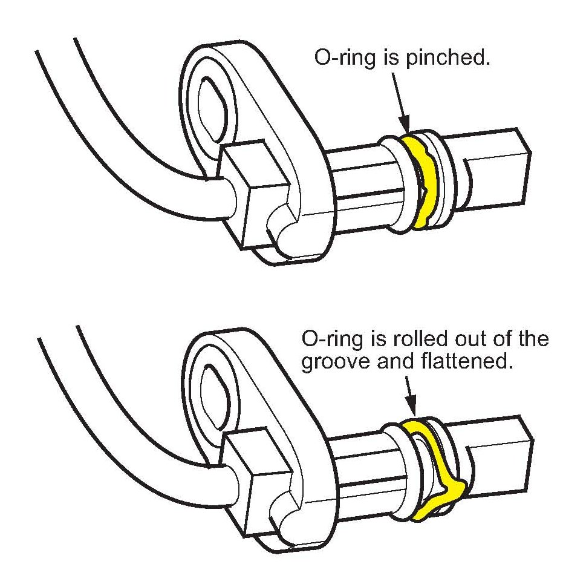
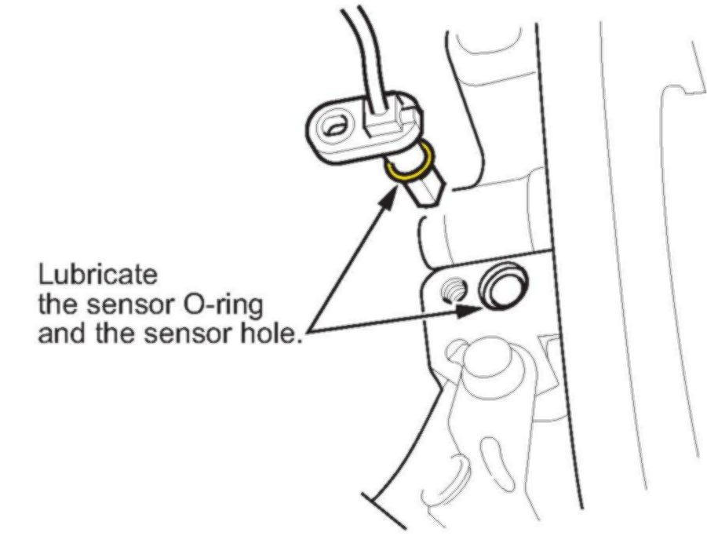
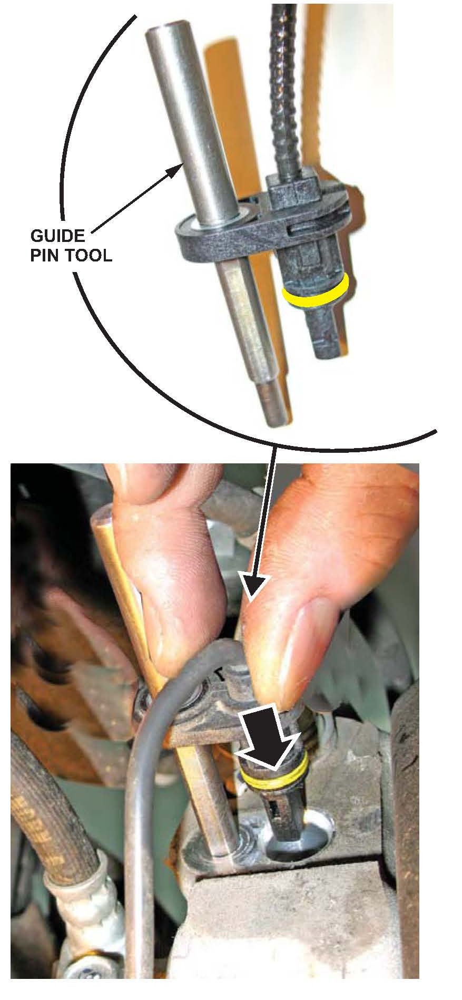
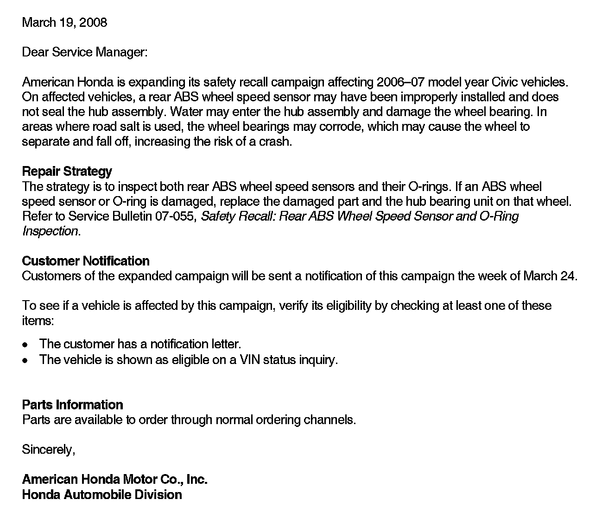

Recall - Rear Wheel Speed Sensor Inspection/Replacement: Overview
07-055March 19, 2008
Applies To:
See VEHICLES AFFECTED
Safety Recall:
Rear ABS Wheel Speed Sensor and 0-Ring Inspection (Supersedes 07-055, dated September 20, 2007, to update the information marked by the black bars)
BACKGROUND
During assembly, some wheel speed sensors may have been improperly installed and do not seal the huL assembly. Water may enter the hub assembly and damage the wheel bearing. In areas where road salt is used, the wheel bearings may corrode, which may cause the wheel to separate and fall off, increasing thE risk of a crash.

VEHICLES AFFECTED
CUSTOMER NOTIFICATION
All owners of affected vehicles will be sent a notification of this campaign. An example of the customer notification is at the end of this service bulletin.
Before beginning work, verify vehicle eligibility by checking at least one of these items:
^ The customer has a notification letter.
^ The vehicle is shown as eligible on a VIN status inquiry.
In addition to these verification items, check for a punch mark below the seventh character of the engine compartment VIN. A punch mark in that location means the ABS wheel speed sensor and 0-ring have been inspected and, if necessary, replaced.
Some vehicles affected by this campaign may be in your new vehicle inventory. According to federal law, these vehicles cannot be sold or leased until they are repaired. To see if a vehicle is affected by this campaign, do a VIN status inquiry before selling it.
CORRECTIVE ACTION
Inspect both rear ABS wheel speed sensors and their 0-rings.
^ If an ABS wheel sensor 0-ring is damaged, replace only the 0-ring and the hub bearing unit on that side.
^ If an ABS wheel sensor is damaged, replace the sensor and the hub bearing unit on that side.
PARTS INFORMATION
Rear Hub Bearing Unit:
Disc brakes - P/N 42200-SNA-A51, H/C 8048787
Drum brakes - P/N 42200-SNA-952, H/C 8058869
ABS Wheel Speed Sensor 0-ring:
P/N 57477-SNE-A01, H/C 8813537
Rear ABS Wheel Speed Sensor:
Driver's side - P/N 57475-SNE-A01 H/C 8051187
Passenger's side - P/N 57470-SNE-A01, H/C 8051179
NOTE:
Damage to the ABS wheel sensors is rare. Order them only when needed.
REQUIRED SPECIAL TOOLS
Guide Pin Tool - T/N 07AAG-SVBA100

WARRANTY CLAIM INFORMATION
Failed Part: P/N 42200-SNA-A51
H/C 8048787
Defect Code: 5FX00
Symptom Code: Q5600
Skill Level: Repair Technician
REPAIR PROCEDURE
1. Raise the vehicle on a lift.
2. Remove the rear wheels.
3. Remove both rear ABS wheel speed sensors.
4. Inspect the rear ABS wheel speed sensors for damage.

GOOD, UNDAMAGED SENSOR:

EXAMPLE OF DAMAGED SENSOR:
If the tip of a sensor has any damage, do this:
^ Replace the corresponding rear hub bearing unit(s):
- Refer to page 18-34 (with disc brakes) or 18-35 (with drum brakes) of the 2006-2008 Civic Service Manual, or
- Online, enter keyword HUB, then select Rear Knuckle/Hub Bearing Unit Replacement from the list.
^ Remove the damaged sensor, and connect the new sensor to the wire harness.
^ Go to step 6 to install the new ABS wheel speed sensor.
If the tips of the sensors are OK, go to step 5.
5. Inspect the ABS wheel speed sensor 0-rings:

DAMAGED O-RINGS:
If a sensor 0-ring is pinched or damaged, do this:
^ Replace the corresponding rear hub bearing unit(s):
- Refer to page 18-34 (with disc brakes) or 18-35 (with drum brakes) of the 2006-2008 Civic Service Manual, or
- Online, enter keyword HUB, then select Rear Knuckle/Hub Bearing Unit Replacement from the list.
^ Replace the damaged 0-ring on the original sensor.
^ Go to step 6 to reinstall the original ABS wheel speed sensor.
If the 0-rings are OK, go to step 6.

6. Lubricate the ABS wheel speed sensor 0-ring and the sensor hole in the knuckle with multi-purpose grease.

7. Insert the guide pin tool into the ABS wheel speed sensor bolt hole until the shoulder of the tool contacts the ABS wheel speed sensor bracket.
NOTE:
To prevent 0-ring damage, the ABS wheel speed sensor must be installed with the guide pin tool.
8. Insert the ABS wheel speed sensor and the guide pin into the knuckle assembly.
NOTE:
To ensure proper alignment when pushing the ABS wheel speed sensor into the knuckle housing, do not hold the sensor bracket during installation; hold the sensor wire.
9. Gently push and pull the ABS wheel speed sensor in and out to make sure the 0-ring is sliding properly in its housing. While you're doing this, make sure the sensor doesn't come out of the knuckle assembly. If the sliding effort is too high, remove the ABS wheel speed sensor, inspect the 0-ring for damage, and do the installation process again.
10. Remove the guide pin tool.
11. Reinstall the bolt, and torque it to 9.8 N.m (7.2 ft-lb).
12. Repeat steps 6 thru 11 to install the other rear ABS wheel speed sensor.
13. Install the rear wheels, and lower the vehicle.
14. Center-punch a completion mark below the seventh character of the engine compartment VIN:
^ Slide open the FRAME NUMBER door on the center cowl cover.
^ Use a long punch to reach the VIN.
